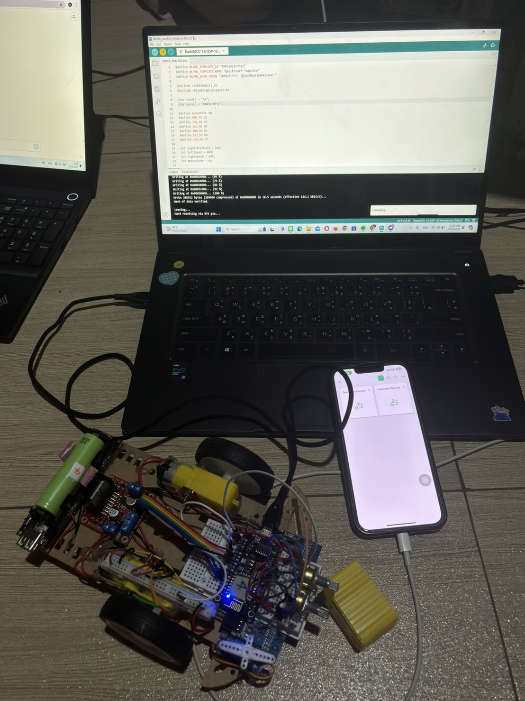
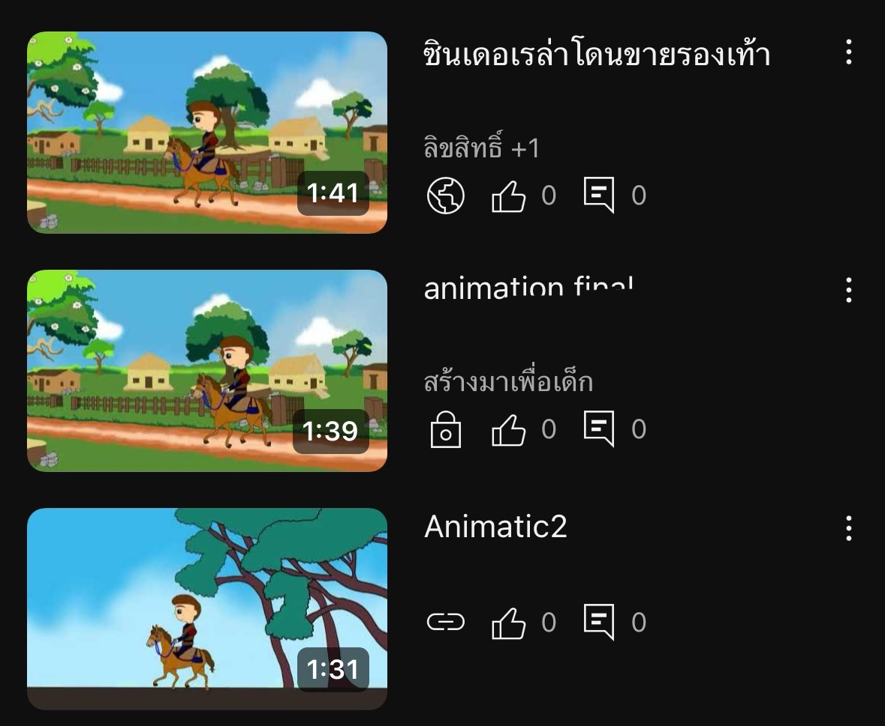
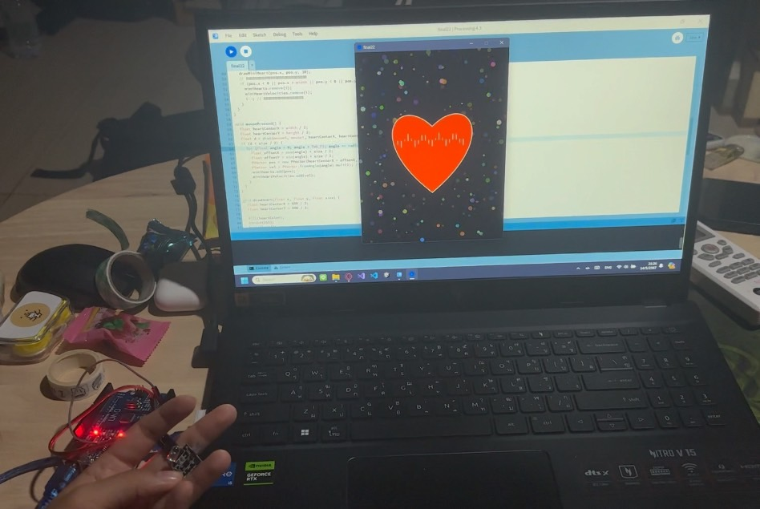

Projects

ตัวติดตามแสง การใช้ LDR เพื่อควบคุมเซอร์โวมอเตอร์ที่ชี้ไฟฉายไปในทิศทางที่สว่างที่สุด

การสร้าง Project Animation โดยใช้โปรแกรม Adobe Animate สร้างจากเนื้อเรื่องที่คิดออกแบบเอง/นำจาก referent มาออกแบบให้เกิดเนื้อเรื่องใหม่ที่แตกต่างจากต้นฉบับ

Heartbeat เซนเซอร์ทำงานโดยปล่อยแสงอินฟาเรดผ่านนิ้วมือ แล้วอีกฝั่งจะมีเซนเซอร์ตรวจจับแสงอินฟาเรดซึ่งสามารถวัดความเข้มแสงที่ถูกดูดซับโดยนิ้วมือ มาแสดงเป็นอัตราการเต้นของหัวใจได้ และแสดงผลทางกราฟิกใน Processing เป็นรูปหัวใจที่ปรับเปลี่ยนตามจังหวะการเต้น